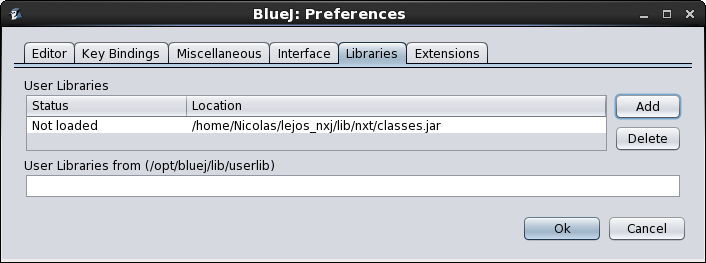

La « brique » NXT, fabriquée par Lego, est une version du système Lego Mindstorms dotée d’un microprocesseur ARM7 32 bits avec 256 ko de mémoire flash, dont 64 ko de mémoire vive (RAM).
Le NXT est équipé de connexion sans fil Bluetooth (classe II V2.0) et d'un port USB 2.0. Ces connexions permettent au NXT de se connecter facilement aux PCs. Pour son alimentation, le NXT a une batterie lithium rechargeable et peut également fonctionner sur six piles AA.
Pour sa partie robotique, le NXT possède :
On peut contrôler le NXT par quatre boutons :
En outre, le NXT est doté d’un haut-parleur et peut produire des sons à une fréquence de 8 kHz.
Dans le cadre du projet, vous allez écrire un programme en Java afin de piloter votre robot. LeJOS NXJ est un environnement de programmation Java pour le Lego Mindstorms NXJ. Pour utiliser LeJOS NXJ, on installe une extension NXJ dans BlueJ.
Les briques NXT sont prêtes à être utilisées, il ne faut en aucun cas les flasher vous même sous peine de mettre votre brique hors d'usage.
Utilisez votre dossier personnel sur les machines de salles afin de conserver votre travail d'une connexion à l'autre. Chaque année des étudiants perdent leur travail à cause du nom respect des consignes.
Lors de ses passages dans vos locaux, le responsable informatique du projet répondra aux questions concernant la partie informatique du projet, la programmation des Légo etc, mais vu le nombre d'étudiants et la diversité des systèmes d'exploitation, aucun support à l'installation de Bluej et de l'extentions NXJ sur votre machine ne sera donné à ce moment là.
Des permanences spécialement prévues seront données pour vous aider en cas de problème lors de l'installation de Bluej et de l'environnement LeJos BluejNXT sur votre portable. La permanence n'est pas prévue pour installer à votre place, mais bien pour vous aider si vous rencontrer des difficultés. Elles se donneront les lundi, mardi et mercredi de S10 de 13h à 14h au Barb06. Si vous rencontrez des problèmes à l'installation, n'hésitez pas à y venir pour pouvoir commencer à programmer dans les plus brefs délais.
Via VirtualBox, vous devriez rapidement savoir programmer votre robot depuis votre portable sans avoir à vous soucier de l'installer de Bluej et de l'extension NXJ.
Il vous suffit d'installer VirtualBox puis de charger l'image de la machine virtuelle qui a été configurée pour vous avec Bluej et NXJ sous Linux (Fedora). L'UCL (SISE) met à votre disposition cette image VirtualBox ainsi qu'une vidéo qui a été faite pour vous montrer, pas à pas, les étapes à suivre pour charger cette machine virtuelle dans Virtualbox.
Virtualbox est téléchargeable ici: https://rdav.sgsi.ucl.ac.be/dfs/groups/d/did-sst-commun/EPL/Virtualbox_Didac_Fedora/
L'image de la machine virtuelle Virtualbox contenant Bluej et la vidéo d'installation se trouvent ici: https://rdav.sgsi.ucl.ac.be/dfs/groups/d/did-sst-commun/EPL/Virtualbox_Didac_Fedora/. Ce répertoire distant est également monté sur vos postes de travail en salles.
Le mot de passe du compte student sous l'image VirtualBox est 1234. N'hésitez pas à le modifier dans Applications - Paramètres - Utilisateurs - Mot de passe.
Si vous le désirez, vous pouvez créer un nouvel utilisateur, allez dans Applications - Paramètres - Utilisateurs, cliquez sur Déverouiller, entrez le mot de passe 1234 puis cliquez sur le "+" de la colonne de gauche. Remplissez les différents champs puis validez en cliquant sur "Ajouter".
3.2.1.1) Problèmes rencontrés:This kernel requires an x86-64 CPU, but only detected an i686 CPU.
No NXT found - is it switched on and plugged in (for USB)?
Cette methode est plus fastidieuse, mais il est possible d'installer sur votre portable Bluej et les librairies nécessaires pour compiler votre programme et l'uploader sur la brique.

Vous trouverez un autre tutoriel pour l'installation ici: https://github.com/jneug/bluej-lejos
Afin de tester, à la fois l'installation de l'extension et le matériel que vous avez reçu vous pouvez télécharger le programme de test (SimpleControler) présent sur GitHub ainsi que sur le Moodle du cours LFSAB1401 (Documents, 7-NXT).
En cas d'erreur, vérifiez la configuration de Bluej : Tools – Preferences – Librairies : il doit y avoir le classes.jar et il doit être dans le status loaded. Si ce n'est pas le cas, il faut l'ajouter (path = /opt/leJOS_NXJ/lib/nxt/classes.jar) et redémarrer Bluej. Dans Tools – Preferences – Extensions la variable NXJ_HOME doit être égale à /opt/leJOS_NXJ
La librairie concernant le fonctionnement des robots Lego est détaillée à cette page. Celle-ci contient de nombreuses classes spécifiques aux fonctionnalités des Lego Minstorms, groupées dans les packages dont le nom commence par « lejos » (n’oubliez pas les « import » correspondants dans votre programme !). Ce tutoriel n'a pas pour but de détailler toutes les possibilités de ces classes, mais donne un aperçu succinct et partiel des possibilités offertes par ces classes et méthodes. Ce qui suit est donc une entrée en matière suffisante pour la réalisation du projet P1.
La classe lejos.nxt.SensorPort représente un port d’entrée du NXT. Il y a quatre instances prédéfinies de la classe SensorPort, correspondant aux quatre ports d'entrée : SensorPort.S1, SensorPort.S2, SensorPort.S3 et SensorPort.S4. Il existe également une classe correspondant à chaque type de senseur :
Le constructeur de chacune de ces classes prend comme paramètre le SensorPort auquel le senseur est connecté. Chaque classe fournit une ou plusieurs méthodes permettant de lire la mesure du senseur correspondant.
Exemple :
import lejos.nxt.*;
TouchSensor touch = new TouchSensor(SensorPort.S1); // capteur tactile connecté au port S2.
if (touch.isDown()) { // si le capteur tactile est touché,
System.out.println(" " + sonic.getDistance()); // affiche la distance vue par le capteur à ultrasons
} La classe lejos.nxt.Motor permet d'accéder aux moteurs NXT. Elle fournit trois instances prédéfinies (de type NXTRegulatedMotor), correspondant aux trois ports de sortie du NXT : Motor.A, Motor.B et Motor.C.
La classe NXTRegulatedMotor représente un moteur. La méthode setSpeed permet d’ajuster la vitesse du moteur. Les moteurs NXT sont équipés d’un capteur de rotation intégré (tachymètre) qui permet d’offrir une large palette de méthodes différentes. Les méthodes getTachoCount() et resetTachoCount() permettent de lire et de remettre à zéro le compteur de rotation. Les autres méthodes, telles que rotate(), utilisent également ce compteur pour contrôler précisément le nombre de rotations du moteur. Les mouvements du moteur s'effectuent à leur vitesse propre, distincte de (et beaucoup plus lente que) la vitesse d'exécution du programme Java. Deux types de méthodes permettant de commander le mouvement du moteur existent, il s'agit des méthodes bloquantes et des méthodes non-bloquantes :
• Pour une méthode bloquante, l'amplitude du mouvement (nombre de degrés, de tours, distance, ...) est pré-déterminée et la méthode attend jusqu'à la fin du mouvement (exemple : Motor.A.rotate(90)) avant de passer à l'instruction suivante. Durant ce temps, l'exécution du programme est suspendue; il ne peut pas, par exemple, détecter un obstacle et arrêter prématurément le mouvement.
Les méthodes bloquantes rotate() et rotateTo(...) font tourner le moteur d'un angle donné ou jusqu'à un angle donné. Lorsque la rotation demandée est terminée, le programme passe à l'instruction suivante.
Attention, dans la majorité des cas vous utiliserez rotate() et non rotateTo() car rotate() est utilisé pour une rotation relative. A partir de la position actuelle rotate(5) fera bouger l'orientation du robot de 5° sur la droite dans tous les cas alors que rotateTo(5) est utilisé pour une rotation absolue et fera par exemple faire une rotation de 355° sur la gauche (pour s'arrêter à l'orientation 5°) si le tachéomètre indique que le robot a une orientation au début de l'instruction de 360°.
Exemple :
import lejos.nxt.*;
Motor.A.setSpeed(720); // 2 rotations complètes par seconde.
Motor.A.resetTachoCount(); // Remettre le compteur à zéro
Motor.A.rotate(90); // Faire tourner le moteur d'1/4 tour.
Motor.A.rotateTo(720); // Faire tourner le moteur jusqu'à ce que le compteur atteigne 2x360°.
// Attention 90° déjà effectué au compteur, donc il ne tournera plus que de 630° sur la gauche.
int angle = Motor.A.getTachoCount(); //Lire le compteur.• Une méthode est non-bloquante lorsque la méthode démarre le mouvement et se termine immédiatement, alors que le mouvement se poursuit (exemple Motor.A.forward()). Le programme doit donc lui-même arrêter les moteurs en temps opportun, soit après un certain délai (Thread.sleep(...)), soit lorsqu'une condition est vérifiée. En attendant, le programme doit absolument libérer le processeur (Thread.yield()), pour permettre aux autres tâches de s'exécuter. Les méthodes non-bloquantes forward() et backward() démarrent le moteur en marche avant ou arrière et passent tout de suite à l'instruction suivante. Les méthodes flt() et stop() permettent d'arrêter le moteur. La méthode stop() empêche le moteur de tourner tandis que flt() le laisse « flotter » librement.
Exemple :
Motor.A.resetTachoCount(); // Remettre le compteur à zéro
Motor.A.forward(); // Démarrer le moteur en avant.
Thread.sleep(1000); // Attendre 1 seconde tout en roulant
Motor.A.stop(); // Arrêter de moteur.
Motor.A.backward(); // Démarrer le moteur en arrière.
while (Motor.A.getTachoCount() > 0) { // Tant que le compteur ne revient pas à 0...
Thread.yield(); // Libérer le processeur.
}
Motor.A.stop(); // Arrêter de moteur. Plusieurs méthodes bloquantes sont proposées avec une variante non-bloquante, comme par exemple rotate(...) et rotateTo(...) en ajoutant true comme argument (voir ci-dessous). La méthode isMoving() permet de tester si le moteur tourne toujours.
Exemple :
Motor.A.rotate(360*10, true); // Démarrer le moteur pour 10 tours.
while (Motor.A.isMoving()) { // Tant que le moteur tourne...
int angle = Motor.A.getTachoCount(); // Lire le compteur...
LCD.drawInt(angle,0,0); // et l'afficher.
} La classe lejos.robotics.navigation.DifferentialPilot permet de piloter un robot roulant avec deux roues sur un même axe, contrôlées par deux moteurs séparés (châssis de type « chaise roulante ») et une roue libre dite « folle »: Les constructeurs permettent de déclarer la géométrie du châssis. Les paramètres de distance peuvent être dans une unité quelconque, pourvu que cette unité soit la même dans tout le programme.
Exemple pour un robot dont les roues gauche et droite sont sur les moteurs A et C :
import lejos.nxt.*;
import lejos.robotics.navigation.*;
final double DIAM_ROUE = 2.1f; // Diamètre des roues motrices en cm
final double DIST_ROUE = 4.4f; // Distance entre les roues motrices en cm
DifferentialPilot pilot = new DifferentialPilot(DIAM_ROUE, DIST_ROUE, Motor.A, Motor.C);
pilot.setTravelSpeed(10); // Vitesse du robot = 10 cm/s.
pilot.setRotateSpeed(45); // Vitesse de pivotage = 45 degrés/s. Les méthodes (bloquantes) travel(...), travelArc(...) et rotate(...) permettent ensuite de faire se déplacer le robot en ligne droite, selon un arc de cercle ou de le faire pivoter sur lui même.
Exemple :
pilot.travel(12); // Avancer de 12 cm.
pilot.rotate(-90); // Pivoter de 90 degrés vers la gauche.
pilot.travel(-12); // Reculer de 12 cm.
pilot.travelArc(10, 12); // Faire un virage à gauche de 12 cm de long selon un rayon de 10 cm.
pilot.arc(-10, 90); // Faire un virage à droite de 90 degrés selon un rayon de 10 cm.Les méthodes (non-bloquantes) forward(), backward(), arcForward(), arcBackward() et stop() permettent de démarrer un moteur pour une durée indéterminée et de l'arrêter.
Exemple :
pilot.forward(); // Avancer en ligne droite indéfiniment.
while(!Button.ENTER.isDown()) { // Tant que le bouton orange n'est pas pressé...
Thread.yield(); // Libérer le processeur.
}
pilot.stop(); // Arrêter le robot. Un programme qui a pour but de contrôler un robot doit être réactif : il doit pouvoir adapter son comportement en fonction de l'évolution du monde physique dans lequel il évolue (repères extérieurs, obstacles, vitesse des moteurs, etc.). Réaliser un tel programme sous forme d'une cascade de conditions et de boucles peut paraître simple et intuitif mais conduit rapidement à du « code spaghetti » : un enchevêtrement inextricable de cas particuliers, difficile à lire, à maintenir et à mettre au point.
Il est possible d'utiliser un mécanisme de listeners, mais ceci conduit à des difficultés techniques et est découragé par les concepteurs de Lejos eux-mêmes.
Au lieu de cela, le package lejos.robotics.subsumption fournit une architecture de contrôle par tâche qui permet de réaliser un programme réactif, de manière modulaire. Le principe est de décomposer le programme en plusieurs tâches qui sont exécutées au besoin (programmation événementielle), en respectant un ordre de priorité, plutôt que de manière prédéterminée par le programme (programmation séquentielle). Ceci permet de caractériser clairement chaque aspect du comportement, et d'ajouter facilement des tâches supplémentaires.
Par exemple, un contrôleur de robot pourrait avoir les tâches suivantes :
avancer en ligne droite
si un obstacle est détecté, virer d'un quart de tour vers la gauche
si un bouton est pressé sur la brique Lego, s'arrêter et mettre fin au programme.
Ces tâches sont en ordre croissant de priorité : la tâche 1 s'exécutant tant que les autres tâches (plus prioritaires) ne sont pas activées.
Chaque tâche est définie par trois éléments, spécifiés par trois méthodes de l'interface Behavior :
Elle fournit la condition d'activation qui détermine quand cette tâche doit être initiée. On peut vouloir qu'une action soit activée si un obstacle se trouve à moins de 25cm (voir exemple ci-dessous), ou si le capteur tactile est pressé. On peut également vérifier des conditions multiples. Exemple : La tâche est activée si, à la fois le capteur photosensible détecte une ligne noire ET si la valeur booléenne d'une variable est à true. Pour que la tâche soit activable, il faut que la valeur retournée par la méthode takecontrol() soit true.
Elle définit l'action que cette tâche doit accomplire (voir exemple ci-dessous). Cette méthode est appelée dès que la tâche devient active.
Cette méthode permet la suppression (l'arrêt) de l'action en cours d'exécution. Elle permet aussi de mettre à jour des données avant la fin de la tâche. Elle est appelée par l'Arbitrator sur la tâche en cours si la méthode takeControl() d'une tâche plus prioritaire retourne true. Si cette tâche arrêtée est réactivée plus tard durant l'exéction du programme, la méthode action() sera à nouveau exécutée depuis le début et non depuis l'endroit où elle avait été arrêtée précédemment.
Pour définir une tâche, il faut réaliser une implémentation de cette interface définissant ces trois méthodes. Il s'agit d'une forme de programmation événementielle : on fournit au système de contrôle du robot différentes tâches à exécuter lorsque différents événements surviennent. Par exemple, la tâche suivante effectue une manoeuvre lorsqu'un obstacle est détecté par le senseur à ultrasons (sonar) :
import lejos.robotics.navigation.DifferentialPilot;
import lejos.robotics.subsumption.Behavior;
import lejos.nxt.UltrasonicSensor;
public class EviterBehavior implements Behavior {
private boolean suppressed = false;
private DifferentialPilot pilote;
private UltrasonicSensor sonar;
public EviterBehavior(DifferentialPilot pilote, UltrasonicSensor sonar) {
this.pilote = pilote;
this.sonar = sonar;
}
public void action() {
suppressed = false; // Remise à zéro
pilote.arc(20.0, -90.0, true); // Entame un virage arrière sans attendre la fin.
while (!suppressed && pilote.isMoving()) { // Tant que {suppress} n'a pas été appelé et que le virage n'est pas terminé...
Thread.yield(); // Libérer le processeur
}
pilote.stop(); // Arrêter le robot
}
public void suppress() {
suppressed = true;
}
public boolean takeControl() {
// Activer si un obstacle à moins de 25 cm
return sonar.getDistance() < 25;
}
} Attention au mécanisme de suppression de tâche ! La méthode suppress() est exécutée alors que la méthode action() est elle-même toujours en cours d'exécution. Elle n'arrête pas simplement la tâche en cours; au lieu de cela, elle doit signaler à la méthode action() que celle-ci doit d'elle-même interrompre son activité. Pour assurer cette synchronisation, on utilise la variable d'instance suppressed comme suit :
• La méthode action() met la variable suppressed à false initialement,
• La méthode suppress(), lorsqu'elle est appelée, met la variable suppressed à true,
• La méthode action() surveille continuellement la variable suppressed via la condition de boucle.
Si la variable suppressed de la tâche en cours devient true (indiquant que la méthode suppress() a été exécutée), le mouvement en cours est interrompu (pilote.stop()) et la méthode retourne immédiatement. La méthode doit donc utiliser des méthodes non-bloquantes sous peine d'ajouter un délai avant la prise en compte du passage de la variable à true.
La suppression (interruption) de la tâche n'est nécessaire que si action perdure dans le temps ; si elle se termine immédiatement il n'est pas nécessaire de mettre en place un mécanisme pour la supprimer. Par exemple, l'action de la tâche suivante quittant immédiatement le programme il est inutile de prévoir sa suppression.
public class StopBehavior implements Behavior {
private DifferentialPilot pilote;
public StopBehavior(DifferentialPilot pilote) {
this.pilote = pilote;
}
public void action() {
pilote.stop(); // Arrêter le robot.
System.exit(0); // Quitter le programme.
}
public void suppress() { // Rien à supprimer.
}
public boolean takeControl() {
// Activer si le bouton ESCAPE est pressé.
return Button.ESCAPE.isDown();
}
} La classe Arbitrator permet de construire et d'activer un contrôleur par tâche. Son constructeur prend en paramètre un tableau contenant les tâches que le robot sera succeptible d'effectuer et que l'Arbitrator devra gérer. Les tâches doivent être ordonnées par ordre croissant de priorité. La méthode start() permet d'activer l'Arbitrator.
Exemple :
DifferentialPilot pilote = new DifferentialPilot(DIAM_ROUE, DIST_ROUE, Motor.A, Motor.C);
UltrasonicSensor sonar = new UltrasonicSensor(SensorPort.S1);
Behavior avancer = new AvancerBehavior(pilote); // Tâche avancer (tout droit indéfiniment).
Behavior eviter = new EviterBehavior(pilote, sonar); // Tâche eviter (manoeuvre arrière en cas d'obstacle).
Behavior stop = new StopBehavior(pilote); // Tâche stop (arrêter tout si un bouton est appuyé).
Behavior[] taches = { avancer, eviter, stop }; // Tableau de tâches dans l'ordre croissant de priorité.
Arbitrator arbitre = new Arbitrator(taches);
arbitre.start(); Une tâche ne sera activée que si elle est activable (takeControl() retourne true) et qu'elle est plus prioritaire que la tâche en cours. Elle ne pourra être interrompue que par une tâche plus prioritaire qu'elle. L'activation et l'interruption d'une tâche ne peut avoir lieu qu'au moment où la tâche en cours exécute une méthode non bloquante. Simultanément, le contrôleur évalue en permanence les méthodes takeControl() de la liste des tâches et initie la tâche la plus prioritaire pour laquelle la méthode takeControl() retourne true, en appelant au besoin suppress() pour supprimer la tâche en cours (moins prioritaire). Attention : le bon fonctionnement de ce mécanisme dépend du fait que la méthode action() de chaque tâche se termine rapidement lorsque la méthode suppress() est appelée.
A tout moment, une seule tâche est activée ; une nouvelle tâche ne peut s'enclencher que lorsque la tâche en cours s'interrompt. Pour ce faire, le contrôleur appelle uniquement suppress() de la tâche en cours (moins prioritaire), puis appelle action() de la tâche à activer. Il ne peut pas forcer l'arrêt de l'exécution de action. Il est donc très important de bien appliquer le mécanisme de suppression des tâches décrit précédemment.
Un cours sur INGInious a été mis en place pour tester vos connaissances sur la programmation Légo, n'hsitez pas à répondre aux QCM.
Un exemple complet nommé SimpleController, dont sont tirés les extraits présentés ici, est disponible sur GitHub. Utilisez-le comme point de départ.
Respectez bien les recommandations suivantes concernant la synchronisation afin d'éviter des problèmes de blocages et de conflits difficiles à diagnostiquer :
• Soyez attentifs à la différence entre méthodes bloquantes et non-bloquantes.
• Utilisez yield et/ou sleep à bon escient pour ne pas accaparer le processeur.
• Utilisez correctement la variable suppressed pour la suppression des tâches ainsi que les tests de valeurs de cette variable.
• Assurez-vous que vos tâches s'interrompent bien lorsque demandé.
Il est prudent d'avoir comme tâche de plus haute priorité une tâche d'arrêt d'urgence conditionnée sur un bouton du robot (par exemple la tâche StopBehavior de l'exemple fourni).
Les senseurs, moteurs et pièces mécaniques appartiennent au domaine de la physique : leur précision peut donc varier, une étape de calibrage peut être nécessaire...
Pour un exemple complet, voir le programme SimpleController sur GitHub